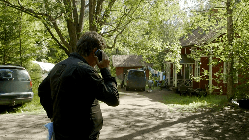
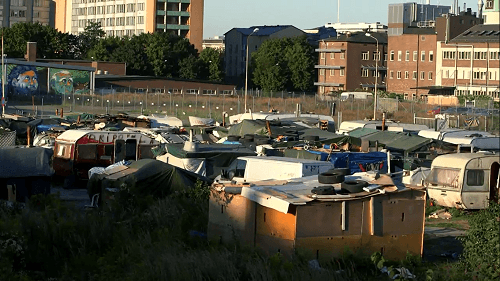

< < < Back
Immigrants Are Now Occupying Private Property In Sweden – Return Of Kings
Gypsy migrants from Eastern Europe are coming to Sweden to beg for money on the streets. They set up camps on private property, and occupy houses they don’t own. But authorities are unable to do anything to stop them.
In the city of Malmö, a shantytown is developing with hundreds of gypsies living without running water or electricity. People are starting to grow tired of the situation, some who might even resort to the use of violence.
“Lawless” situation
The TV program Uppdrag granskning continues its exposé of the effects of immigration in Sweden. One recent show was about the so called “EU migrants,” a politically correct code word for Gypsy beggars.
These Romani people, coming from Bulgaria and Romania, have been a common sight on the streets of Sweden for the past few years. They make their living mostly from begging for money, which must be a lucrative business, since more of them are coming every year.
While panhandling is not a crime (yet), occupying other people’s property certainly is. And that’s what’s happening right now. Coming to Sweden dirt-poor, the gypsies set up camp in places where they have no permission to stay. Some live in caravans or abandoned buildings, others in tents or makeshift shelters.
They throw their trash in the woods, which is also where they defecate. Naturally, Swedes residing around the Gypsy encampments are not terribly happy about the situation.
One woman from a small Swedish town where gypsies have moved in, describes the situation as “lawless.” One man warns that it might get violent.
I can tell you that most of the people living around here are hunters. So there’s basically a weapon in every home. And you know what can happen when people are partying and getting each other riled up.
Occupied land

View of an occupied summer house.
Uppdrag granskning talks to the owner of a summer house which is being occupied by a group of eight EU migrants, both children and adults. They have now lived there for several months.
The owners have reported the illegal occupation of their cottage to the police. But the investigation was closed—since nothing has been stolen, i.e. taken from the property, it doesn’t count as a break-in.
For the police to remove the occupiers by force, the owners themselves are required to identify who the criminals are. Without identification, law enforcement won’t lift a finger to intervene.
Shantytown growing
A similar situation has occurred in the city of Malmö, where four hundred gypsies have created what some call a shantytown on private property. It looks like a big, messy trailer park.
The television reporters try to talk to the people living there, but are met by an angry crowd screaming at them to turn off the camera and leave. They seem to think that they are the landowners now.
When the reporters come back with a written permit to film, one of the residents comments on the situation.
We know that this is a private property, but what can we do? To stay where, in the middle of the street? Do you think that I like to stay here? No, I don’t.
In this case too, the authorities refuse to take action, saying that the four hundred immigrants must be identified before they can be evicted. And the landowner bears the responsibility of identifying them.
While it might sound surreal, this is actually how Swedish law operates. By not doing anything to stop the crimes taking place, police officers are following the law.

A shantytown developing in Malmö.
Leftists oppose the rule of law
On television, the subject of illegal occupations was debated. As could be expected, the leftists blame “society” for not taking better care of the illegal immigrants; “How can we let people live like this?”
According to the leftists speaking, the authorities should not evict the immigrants if they can’t provide a better option for them. What they’re basically saying is that the illegal occupiers should be rewarded for their crimes.
Leftists want law enforcement to be selective. They wouldn’t tolerate their own inner city apartments being occupied, but when these poor gypsies do it to someone else’s property, it’s perfectly fine and just.
If you don’t agree, and want everyone to be equal before the law, you’re obviously an evil racist. And if you don’t want tax money to be handed over to every immigrant that happen to cross the border, you’re a selfish, capitalist scumbag.
Get them out
There’s a simple answer to the question of what should be done about the illegal occupiers: Throw them out. Not necessarily out of the country, but they should certainly not be allowed to stay on other people’s property.
Being a Gypsy doesn’t mean you get a free pass to break the law. Being poor doesn’t give you any special rights either. If the authorities can’t punish criminals, or don’t want to do it out of fear of being labeled politically incorrect, then citizens should take matters into their own hands.
Swedes must take a stand at some point, otherwise the word will spread that we are pushovers who let immigrants do whatever they want without repercussions. We need to stop fearing being called “racist” or “xenophobic.” If we don’t, how much of this country will end up occupied by foreigners?
Read More: Why Does Sweden Take In More Immigrants Than Other Nordic Countries?